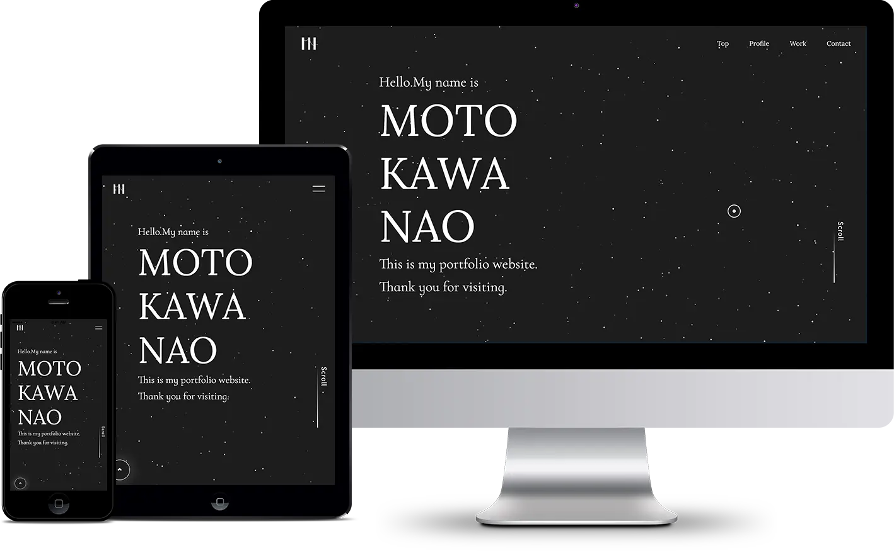

Web site
Nao Motokawa Portfolio
2024.05~制作中 / 2024.06完成予定

- ◼️概要
- 自身のポートフォリオサイト
- ◼️使用アプリ
-
Figma / Photoshop / Illustrator
VS-code
（HTML / CSS / JavaScript）
- ◼️制作時間
-
デザイン : 3週間
コーディング : 3週間
- ◼️カラー
-
- 目的
-
１、就職活動のため
自身のスキルや強み、これまでの制作物や制作背景を伝える
２、スキルアップのため
CSSやJavaScriptで動きを出すコーディングがまだ自信がなかったので、動きに拘った作品をつくる - コンセプト
- シンプルに見やすく、中身のコンテンツが映えるように、自分らしく、ということをコンセプトに制作しました。 まだ未経験のWeb業界で、何色にも染まりきれていない自分を表現するのに、モノクロが合っているのではないかと思いました。また、サイトの目的は就職活動の際に、自身のスキルや強み、これまでの制作物や制作背景を伝えるためのポートフォリオ作成なので、採用担当者の方々が見て分かりやすく、中身のコンテンツが伝わるよう意識しました。
- ターゲット
- Web制作会社の採用担当者の方々
- 制作背景
-
職業訓練の6ヶ月間でWebに関する基本的なスキルを習得できましたが、多くの求人では実務経験が求められていることを知りました。そのため、さらなるスキルアップを目指し、ポートフォリオサイトを制作することにしました。
ポートフォリオのデザインでは、ありきたりなものにならないよう、自分らしさを表現することを意識しました。コーディング面では、CSSを使ったアニメーションやJavaScriptを駆使して、動きのあるサイト作りに挑戦しました。JavaScriptを一から理解するために、Udemyの教材やYouTubeを活用し、独学で学びましたが、かなり苦労しました。それでもJavaScriptのライブラリ等を活用し、できる範囲で動きのあるサイトを実現することに努めました。
自分らしさを表現しつつ、技術力を高めるために努力したこのポートフォリオが、私のスキルを証明する一助となればと思い制作しました。